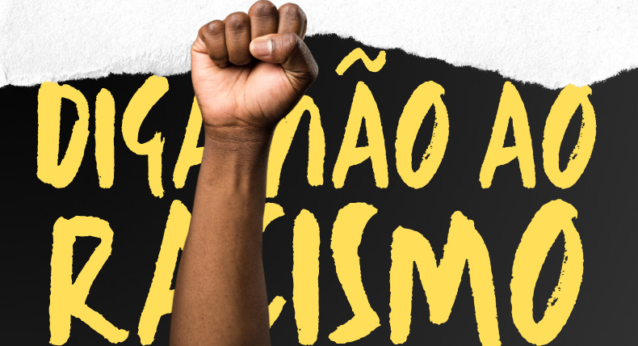
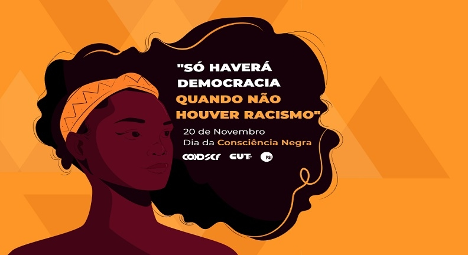

<body bgcolor="black"></body>


<link rel="stylesheet" href="style.css">
<font size="16">
<h1>Racismo</h1>

<p>O racismo é um sistema de discriminação e preconceito baseado na ideia de que algumas raças são superiores a outras. Essa visão distorcida pode se manifestar em atitudes, crenças e comportamentos que marginalizam ou oprimem pessoas de determinadas etnias. O racismo pode ser tanto explícito, por meio de atitudes abertas de hostilidade, quanto estrutural, refletido em normas, políticas e práticas institucionais que prejudicam grupos racializados.</p>

<P>Ele tem raízes históricas, muitas vezes relacionadas à colonização, escravidão e segregação. Além de impactar diretamente os indivíduos, o racismo também afeta as sociedades, criando disparidades em áreas como educação, saúde, moradia, e no mercado de trabalho.

<p>Combater o racismo exige não apenas a mudança de atitudes individuais, mas também a transformação das estruturas sociais e políticas que perpetuam essas desigualdades.<p>
<p> Racismo é uma ideologia baseada na crença de que as características físicas, como cor da pele ou etnia, determinam o valor e as capacidades de uma pessoa. Essa ideia erronea justifica a discriminação e a exclusão de indivíduos ou grupos, perpetuando desigualdades sociais, econômicas e políticas. Historicamente, o racismo foi legitimado por sistemas de escravidão, colonização e segregação, e, apesar dos avanços legais em muitos países, ele ainda persiste em várias formas na sociedade contemporânea.<P>

<p> Racismo estrutural é um dos maiores desafios, pois se manifesta em instituições como escolas, hospitais, polícia e mercado de trabalho, criando barreiras que dificultam o acesso igualitário a direitos e oportunidades. Além disso, o racismo também se reflete no cotidiano, por meio de atitudes e preconceitos que muitas vezes são invisíveis, mas extremamente prejudiciais.<P>

<P>Combater o racismo exige mais do que conscientização. É necessário transformar as estruturas sociais e políticas que sustentam essas desigualdades. A educação, a reflexão sobre privilégios e a criação de políticas públicas inclusivas são fundamentais para a construção de uma sociedade mais justa e igualitária, onde todas as pessoas, independentemente de sua cor ou origem, possam ter as mesmas oportunidades.<p>
</font>


